Mobility & Transportation
The way we move people and goods is changing - whether on foot, wheels, rails or in the air. How do we provide access
to mobility in ways that are efficient, equitable, sustainable and affordable? With some of the highest capital needs of service
areas, how can cities, counties, agencies and regions ensure decisions are made strategically, effectively and collaboratively?
Here are some of the solutions and momentum underway throughout North Texas.
North Texas Innovation Alliance Lead Partners
Email Address
Subscribe to Our Newsletter
Sign up with email address to receive news and updates.
Dallas - Trail System: The LOOP is about connection. By joining 39 miles
of existing trails in Dallas with 11 miles of newly built trails, The
LOOP increases access to public transportation and green space ensuring
Dallasites can access these resources across the city. A catalyst for
mobility and economic opportunity, The LOOP will make Dallas more
vibrant and pedestrian-friendly, creating a sense of community across
our city and making abundant green space part of our identity. By
bringing connection to more neighborhoods and creating a stronger, more
united Dallas, The LOOP’s urban trail system is the single most
important investment Dallas can make for our residents for generations
to come. More from the LOOP at: https://theloopdallas.org
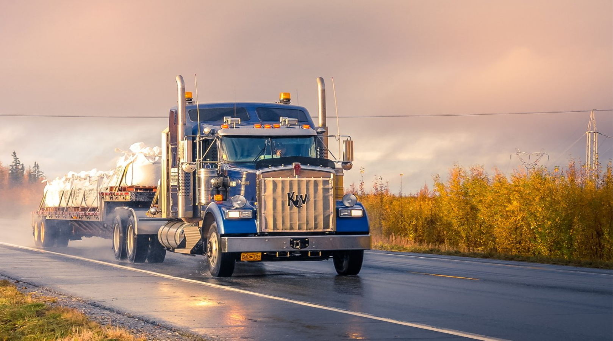
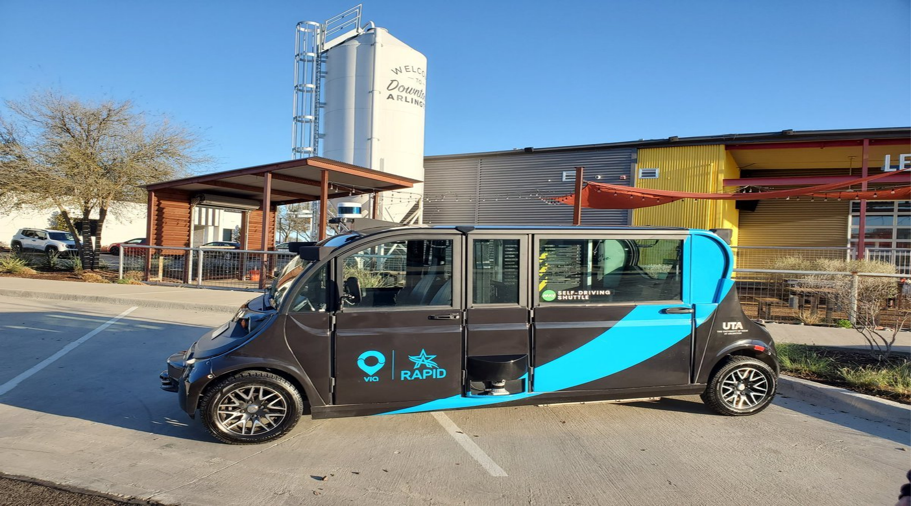
Arlington - AV On-Demand Shuttle Deployment: The City of Arlington has
partnered with Via, May Mobility, and UT Arlington to launch the RAPID
pilot program, the first autonomous driving shuttle initiative to
integrate with an existing public transportation service. The City of
Arlington recognized the need for effective, efficient, and accessible
transportation for all riders. Made possible by a grant from the Federal
Transit Administration (FTA), the city decided to combine on-demand
rideshare with autonomous technology to make local transportation as
safe as possible. In 2021, May Mobility began operating four autonomous
Lexus shuttles, alongside one wheelchair-accessible Polaris GEM shuttle,
as part of an expansion of the RAPID (Rideshare, Automation, and Payment
Integration Demonstration) program. The May Lexus shuttles, like the
current May GEM shuttles, will be staffed by a Fleet Attendant and will
operate on Arlington roads.
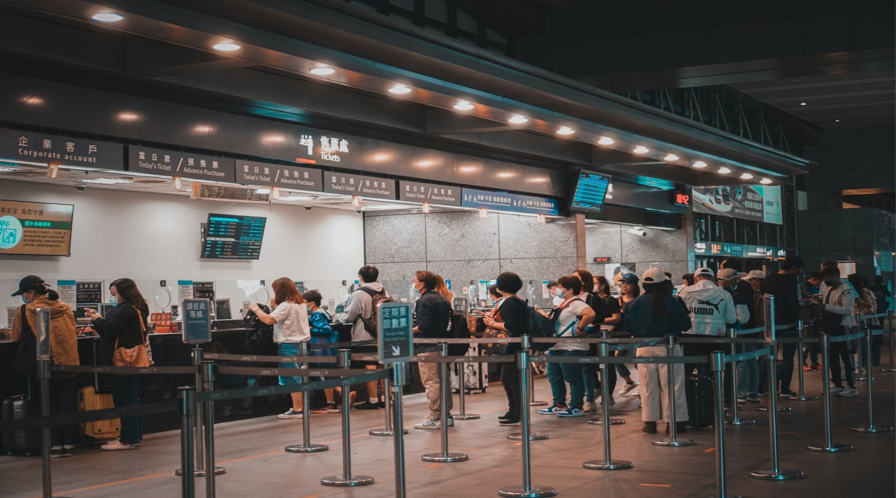
North Texas - Autonomous Trucking Hub: Did you know Texas is the most
popular location for autonomous freight movement pilot programs? Dallas
and Houston are two of the biggest freight hubs in the U.S. Major
transportation and technology companies including Aurora, TuSimple,
Waymo, and Kodiak Robotics all have major operations in the region.
Freight transportation is a key component in the DFW regional economy.
The North Texas region is located along Interstate Highway 35, which has
served as the North American Free Trade Agreement (NAFTA) corridor since
1995. The region is also home to a national freight railroad crossroads
and national and international air cargo hub, making it a national
logistics hub. Within 48 hours, 98 percent of the U.S. population can be
reached from this region by truck.
DFW Airport - Artificial Intelligence Concierge: Dallas/Fort Worth
International (DFW) Airport’s Innovation Team partnered with IBM Watson
and Soul Machines to develop and trial an artificial
intelligence-powered digital human concierge. During the trial, the
digital human concierge provided passengers at the airport on-demand,
voice-based answers to their questions from her temporary location in
Terminal A. DFW Airport has become the first airport to merge IBM Watson
artificial intelligence with Soul Machines Digital DNA to create a
digital concierge. The DFW Airport Innovation Team will use results of
the test program to evaluate the digital concierge’s future potential at
DFW. As it aims to become the “airport of the future”, DFW says it is
committed to staying a step ahead of its customers, who are increasingly
choosing on-demand voice-based technology when seeking information on
their smart phones or other devices.
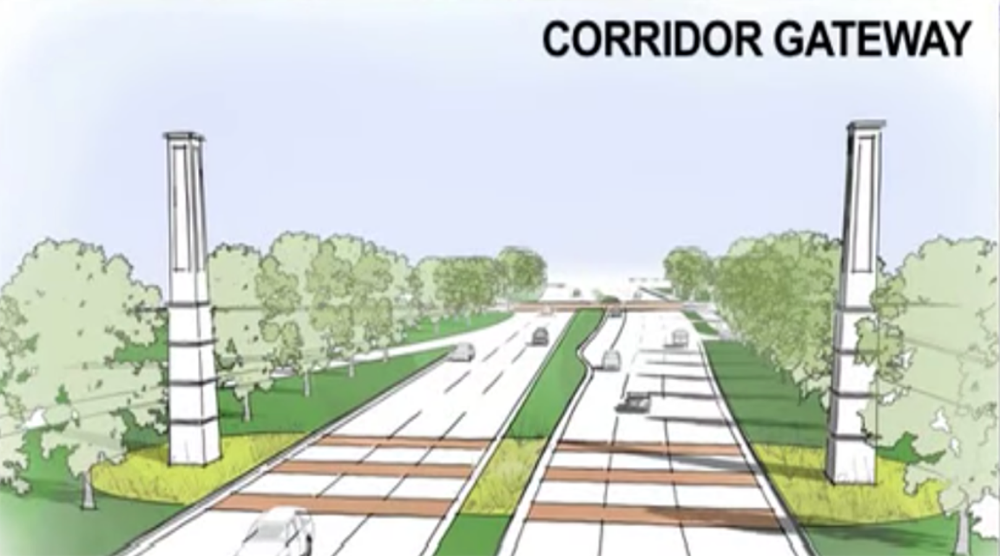
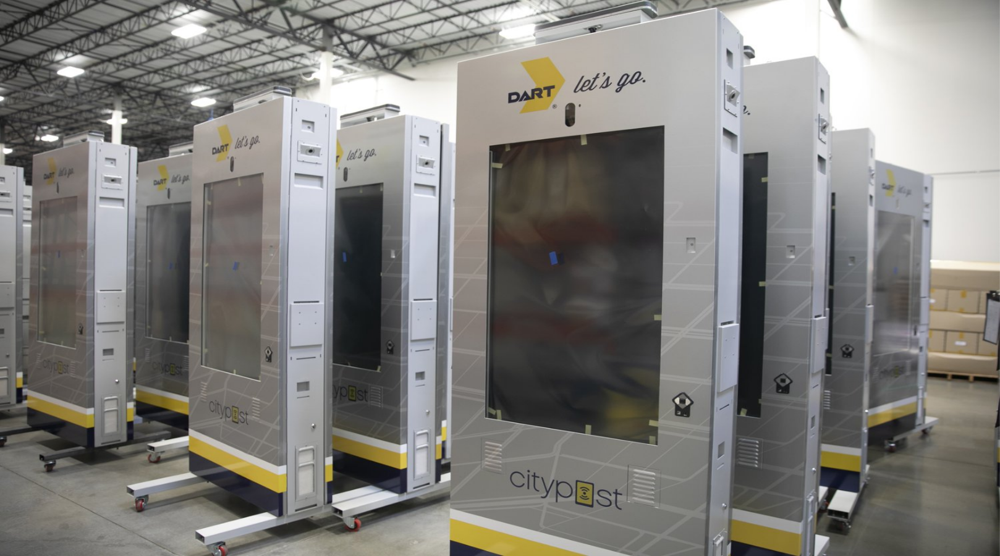
Dallas - S.M. Wright Smart Corridor: S.M. Wright will serve as one of
two complete streets/smart city test beds for the city of Dallas, which
is developing templates for how its roads and intersections should be
built and rebuilt in the future. In the process of rehabbing roads, the
city will attempt to install data-driven elements as well, such as
traffic-control boxes that sync traffic lights to traffic flow,
high-efficiency light-emitting diode streetlights that also will be
loaded with sensors. As the city puts in new roads, it’s an ideal time
to embed such things as power strips for charging electric vehicles as
well.
Dallas Area Rapid Transit (DART): In the largest deployment of its kind
by a public transit agency, DART is committed to bringing innovative
technology and services to North Texas with the installation of more
than 300 new interactive digital kiosks. In addition to technological
advancements, the kiosks simplify the way riders utilize the DART System
while providing new opportunities to engage with community partners,
local merchants and local events. Working with a variety of local
partners such as Ericsson and Parsec Technologies, Inc., as well as
national partners such as Landmark Infrastructure Partners LP (NASDAQ:
LMRK), the DART kiosks are operated under the CityPost brand by Smart
City Media. The kiosks represent a rich compute environment that will
enable high-speed internet access and also make it easier than ever
before to take advantage of the most powerful technological capabilities
available from a public transit agency in the country with the highest
standards for encryption and identity protection.
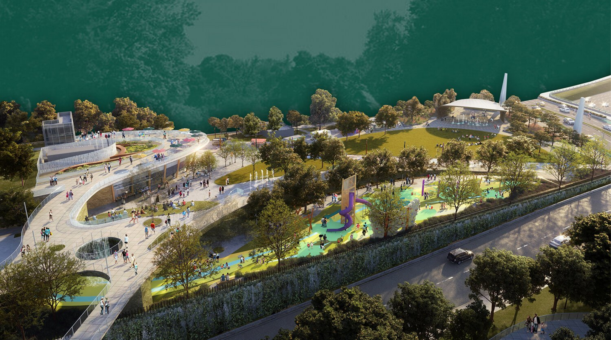
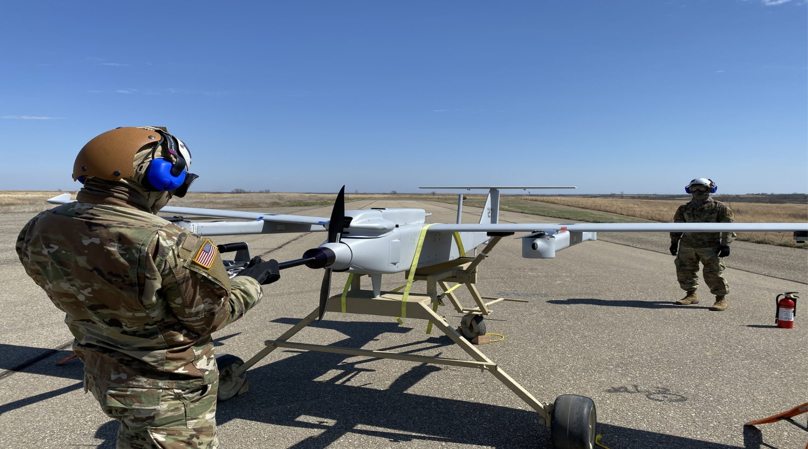
Dallas - Southern Gateway Park: Recognizing the long-term impacts of a
highway in dividing and exacerbating inequities in Southern Dallas, in
the late 2010's, the recommendation for building a community deck park
over the highway to reconnect these two neighborhoods was approved. The
Southern Gateway Park is the largest capital project of its kind in the
history of Southern Dallas, $47 million of which is dedicated to
building the infrastructure to support the park. The design and
construction costs for the overlaying deck park are estimated at $35
million. Construction is underway, with Phase 1 of the park opening set
for 2023. This 2.8 acres Phase I of the park will include features
including a multi-purpose pavilion, large lawn, pavilion, children's
playground, and turnaround for food trucks and drop offs.
The North Central Texas Council of Governments (NCTCOG) - Advanced Air
Mobility and NASA: North Texas is attracting attention for its embrace
of creative transportation solutions from an agency that knows something
about moving people in innovative ways – NASA. NCTCOG has entered into
an agreement with the National Aeronautics and Space Administration to
study the potential of drone technology and integrate it into future
transportation plans. NASA will work with NCTCOG and a group of public-
and private-sector partners to study cargo-carrying drones and automated
air taxis during a series of at least four future workshops. NASA has
been engaged with the Federal Aviation Administration and other regions
about how to integrate Advanced Air Mobility technologies such as
drones, also called unmanned aircraft systems, into metropolitan areas.
Drones are becoming more common for use in business, public safety and
recreational purposes. During the COVID-19 pandemic, NCTCOG has been
hosting monthly virtual workshops to help professional operators and
hobbyists remain up to date on the rules and regulations governing drone
use, as well as best practices.
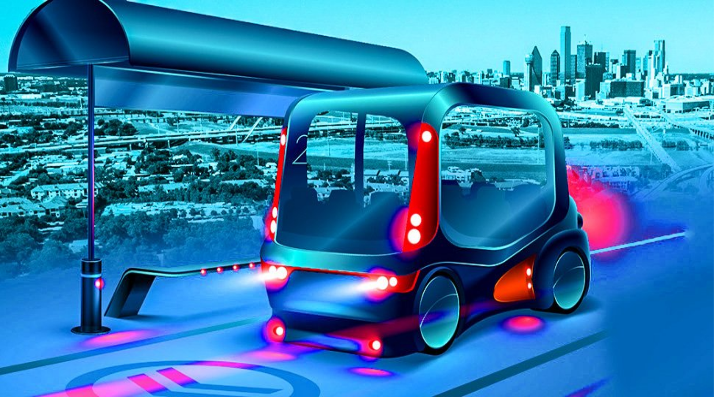
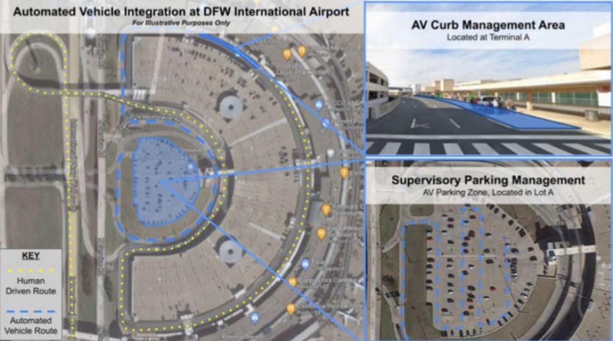
Texas Research Alliance - The North Texas Center for Mobility
Technologies (NTCMT): The NTCMT brings coordinated expertise of
Dallas-Fort Worth research universities to tackle mobility technology
challenges across Texas, nationally, and globally. The Center handles
challenges in areas such as: autonomous vehicles, 5G, EVTOL, electric
motors, micro mobility, drones, Lidar, radar, machine vision, freight,
drones, first mile, last mile, networking, network splicing, object
avoidance, multi-modal, on-demand mobility, last mile, personal
mobility, micro mobility, fuel cells, battery, electric motors, motor
controllers, route planning and more. Recently funded projects have
included air quality networks and unmanned aerial vehicles (UAV). NTCMT
is a program of the Texas Research Alliance (TRA).
Automated parking at DFW Airport: Autonomous parking technology company
STEER Tech is planning to use the airport as a testbed for an automated
parking ecosystem as part of the North Central Texas Council of
Governments’ (NCTCOG) program to use driverless tech to accommodate the
region’s growing population. As part of the project, the airport will
conduct tests in the coming months that could see cars that already have
autonomous parking capabilities “park themselves” after dropping off
passengers at the terminal.
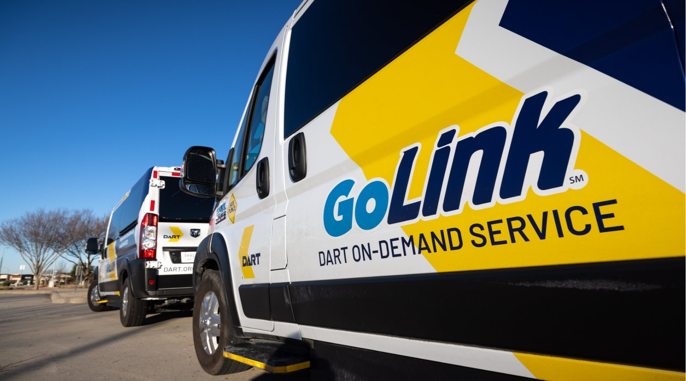
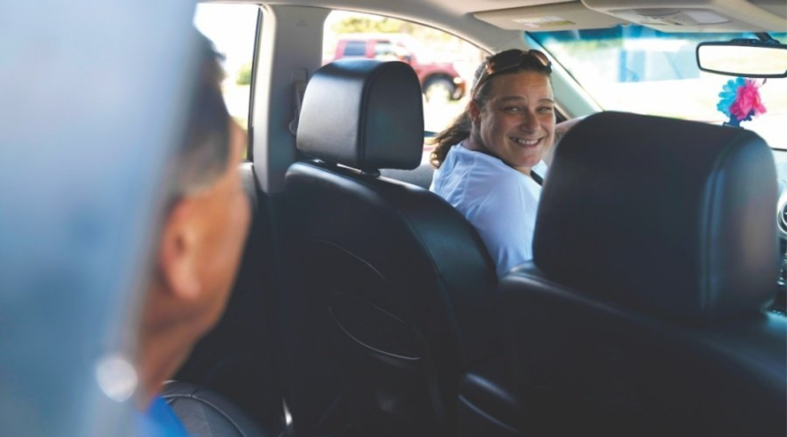
DART - GoLink OnDemand: DART's expanded GoLink On-Demand service is
officially live as of 12/6/21, making the new service the largest
transit On-Demand service in North America, with over 230 Sq. Miles of
coverage for this innovative new model. For scale, 230 Sq. Miles is
larger than the entire city of Chicago, and one that has been
facilitated by innovative mobile technology! Over 70% of GoLink Riders
book their service through DART's award winning GoPass App. Expanding
this service now across 30 distinct zones spanning DART"s 13 cities in a
flawless activation yesterday.
Autonomous vehicles in McKinney: Feonix Mobility Rising, a nonprofit
focused on health and transportation equity, asked McKinney City Council
during a Feb. 1 work session for support on a program that would provide
necessities to residents. The program, informally called the Wellness
Wagon, would deploy two self-driving vehicles to deliver fresh food and
non-narcotic medications to McKinney’s underserved population. The North
Central Texas Council of Governments is collaborating with Feonix on the
project. The Wellness Wagon would serve those living in poverty, people
with disabilities and senior citizens. McKinney has more than 13,000
people living at or below the federal poverty level, according to the
presentation. In addition to deliveries, the Wellness Wagon would be
designed as a telehealth resource. Vehicles would have designated
parking locations—for example, a patient’s residence or in the parking
lot of a senior center—for patients to virtually visit with healthcare
providers.